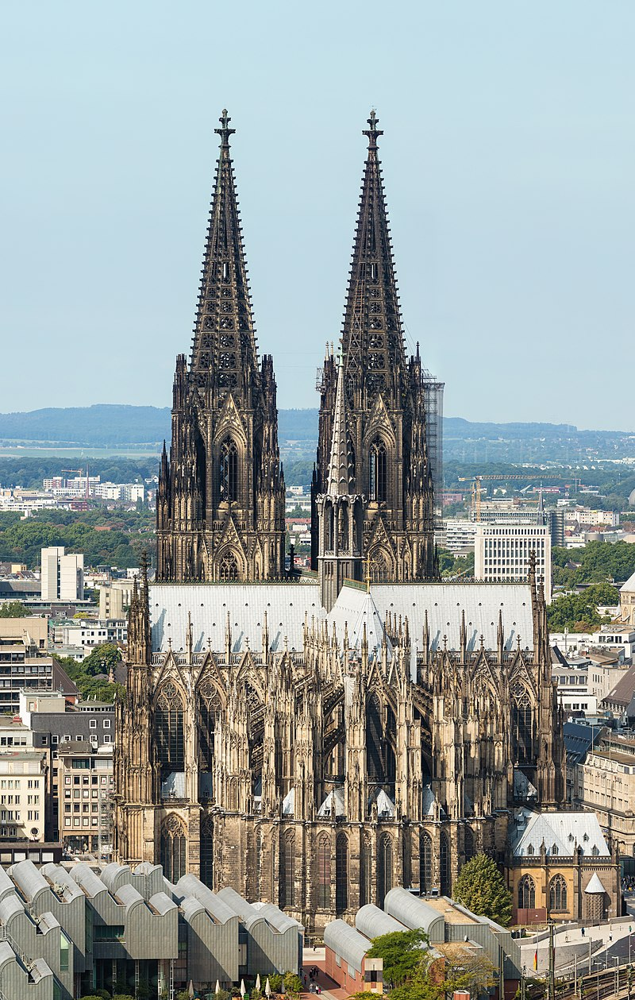

Immanuel Kant

Claim to Fame: Philosophy
22 April 1724 - 12 February 1804
Ludwig van Beethoven

Claim to Fame: Music
17 December 1770 - 26 March 1827
Albert Einstein
Claim to Fame: Physics
14 March 1879 - 18 April 1955
Deutschland
Immanuel Kant
Claim to Fame: Philosophy
22 April 1724 - 12 February 1804
Ludwig van Beethoven
Claim to Fame: Music
17 December 1770 - 26 March 1827
Albert Einstein
Claim to Fame: Physics
14 March 1879 - 18 April 1955
Brandenburg Gate
Location: Berlin
Erected in: 1791
Cologne Cathedral
Location: Cologne
Erected in: 1560
Neuschwanstein Castle

Location: Hohenschwangau
Erected in: 1886